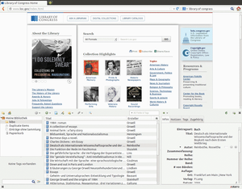

Zotero
Dieser Artikel wurde für die folgenden Ubuntu-Versionen getestet:
Ubuntu 17.10 Artful Aardvark
Ubuntu 16.04 Xenial Xerus
Ubuntu 14.04 Trusty Tahr
Zum Verständnis dieses Artikels sind folgende Seiten hilfreich:
Zotero  ist ein Programm zur Literaturverwaltung, das ursprünglich als Erweiterung von Firefox oder Netscape Navigator konzipiert war. Ab Version 3.0 konnte es auch als unabhängiges Programm installiert werden, ab Version 5.0 ist ausschließlich die sogenannte "Standalone"-Variante verfügbar. Zotero ist sowohl unter Linux als auch unter Mac und Windows einsetzbar. Das Programm erkennt, wenn eine Seite Literaturangaben bereithält, und erlaubt nach der Installation des Hilfsprogramms "Zotero Connector" die direkte Speicherung in die Literaturdatenbank durch einen Klick auf ein Symbol in der Menüleiste des Browsers (unter Linux ist das für Firefox, Chrome und Opera möglich).
ist ein Programm zur Literaturverwaltung, das ursprünglich als Erweiterung von Firefox oder Netscape Navigator konzipiert war. Ab Version 3.0 konnte es auch als unabhängiges Programm installiert werden, ab Version 5.0 ist ausschließlich die sogenannte "Standalone"-Variante verfügbar. Zotero ist sowohl unter Linux als auch unter Mac und Windows einsetzbar. Das Programm erkennt, wenn eine Seite Literaturangaben bereithält, und erlaubt nach der Installation des Hilfsprogramms "Zotero Connector" die direkte Speicherung in die Literaturdatenbank durch einen Klick auf ein Symbol in der Menüleiste des Browsers (unter Linux ist das für Firefox, Chrome und Opera möglich).
Mit jedem Eintrag können auch mehrere Dateien, Notizen und Webseiten verknüpft werden, so dass beispielsweise als PDF gespeicherte Dokumente ebenfalls an jedem Ort direkt aus der Literaturverwaltung geöffnet werden können.

Zotero bietet die Möglichkeit, formatierte Referenzen direkt in Dokumente einzufügen, die gerade bearbeitet werden. Es unterstützt zu diesem Zweck herkömmliche Textverarbeitungsprogramme wie OpenOffice.org/LibreOffice und MSOffice, bietet aber auch Schnittstellen zu LaTeX-Editoren wie LyX und Kile sowie für web-basierte Applikationen wie Google Text & Tabellen. Die Möglichkeit, Einträge in verschiedenste Formate zu exportieren und importieren, ermöglicht die Zusammenarbeit auch in heterogenen Arbeitsgemeinschaften.
Installation¶
Die Standalone-Variante lässt sich ebenso wie der "Zotero Connector" von der Downloadseite  des Projekts herunterladen.
des Projekts herunterladen.
Alternativ lässt sich die Zotero-Standalone-Variante über ein PPA installieren, das die Dateien in /opt/ hinterlegt und einen Menüpunkt anlegt. Zur Installation muss das folgende PPA freigeschaltet [1] werden:
Adresszeile zum Hinzufügen des PPAs:
ppa:smathot/cogscinl
Hinweis!
Zusätzliche Fremdquellen können das System gefährden.
Ein PPA unterstützt nicht zwangsläufig alle Ubuntu-Versionen. Weitere Informationen sind der  PPA-Beschreibung des Eigentümers/Teams smathot zu entnehmen.
PPA-Beschreibung des Eigentümers/Teams smathot zu entnehmen.
Damit Pakete aus dem PPA genutzt werden können, müssen die Paketquellen neu eingelesen werden.
Anschließend kann Zotero-Standalone über das folgende Paket installiert [2] werden:
zotero-standalone (ppa)
 mit apturl
mit apturl
Paketliste zum Kopieren:
sudo apt-get install zotero-standalone
sudo aptitude install zotero-standalone
Benutzung¶
Ein Einblick in die Möglichkeiten von Zotero wird hier anhand eines Beispiels gegeben. Weiterführende Hilfe und einen Überblick über Funktionen und Kompatibilität mit verschiedenen Literaturquellen findet man in den Links.
Nach Eingabe von "kofler linux" in die Suchmaske des Gemeinsamen Bibliotheksverbundes  werden einem die Ergebnisse präsentiert. Von diesen wählt man die 8. überarbeitete Studentenausgabe "Linux: Installation, Konfiguration, Anwendung" aus. In der Adressleiste erscheint nun rechts ein blaues Buchsymbol
werden einem die Ergebnisse präsentiert. Von diesen wählt man die 8. überarbeitete Studentenausgabe "Linux: Installation, Konfiguration, Anwendung" aus. In der Adressleiste erscheint nun rechts ein blaues Buchsymbol  . Mit Klick darauf werden die Literaturdaten direkt in die Datenbank gespeichert. Andere Medien wie Zeitschriftenartikel zeigen ein anderes Symbol.
. Mit Klick darauf werden die Literaturdaten direkt in die Datenbank gespeichert. Andere Medien wie Zeitschriftenartikel zeigen ein anderes Symbol.
Um diesen Eintrag zu sehen, muss das Aufklappmenü von Zotero geöffnet sein. Dazu klickt man auf das Symbol unten rechts im Browser oder drückt
Strg +
Alt +
Z . Hier finden sich nun zwei Einträge, den soeben gespeicherten und "Zotero - Schnelleinstieg", der einen Link zu einer englischen Einführung bereithält. Alternativ kann man auch die deutsche Version lesen.
Das Aufklappmenü ist in drei Spalten unterteilt. Die linke Spalte dient der Organisation der Literatureinträge, die mittlere enthält eine anpassbare Übersicht der einzelnen Einträge und die rechte enthält ausführlichere Informationen zu dem gerade ausgewählten Eintrag.
Literatur verwalten¶
In der linken Spalte lassen sich eine Ordnerstruktur ähnlich einem Dateibrowser anlegen und darin suchen, sowie zur Verfügung stehende Tags (Schlagworte) auswählen. Durch Klick auf  wird ein neuer Ordner angelegt (z.B. "Linux lernen"). Aus dem umfassenden Ordner "Meine Bibliothek" kann man nun per Drag & Drop den zuvor gespeicherten Eintrag zum Kofler in "Linux lernen" ziehen. Will man den Eintrag noch mit einem Tag versehen, wählt man den Literatureintrag aus und klickt im Reiter "Tags" in der rechten Spalte auf "Hinzufügen" (z.B. Linux). Durch Klick auf ein bereits vergebenes Tag lässt sich der Name ändern oder löschen (alternativ mit dem kleinen Minus-Symbol rechts vom Tag). Die Unterteilung in Ordner und Schlagwörter mag redundant erscheinen, hilft aber, wenn die Datenbank größer wird. So kann man das aktuelle Projekt, an dem man arbeitet, als Ordner (ein Eintrag kann in mehreren Ordnern enthalten sein) anlegen und Schlagwörter thematisch verteilen.
wird ein neuer Ordner angelegt (z.B. "Linux lernen"). Aus dem umfassenden Ordner "Meine Bibliothek" kann man nun per Drag & Drop den zuvor gespeicherten Eintrag zum Kofler in "Linux lernen" ziehen. Will man den Eintrag noch mit einem Tag versehen, wählt man den Literatureintrag aus und klickt im Reiter "Tags" in der rechten Spalte auf "Hinzufügen" (z.B. Linux). Durch Klick auf ein bereits vergebenes Tag lässt sich der Name ändern oder löschen (alternativ mit dem kleinen Minus-Symbol rechts vom Tag). Die Unterteilung in Ordner und Schlagwörter mag redundant erscheinen, hilft aber, wenn die Datenbank größer wird. So kann man das aktuelle Projekt, an dem man arbeitet, als Ordner (ein Eintrag kann in mehreren Ordnern enthalten sein) anlegen und Schlagwörter thematisch verteilen.
In der rechten Spalte lassen sich zu jedem Literatureintrag Notizen, Anhänge wie z.B. PDFs oder Bilder anhängen. Der Reiter "Zugehörig" erlaubt das Verknüpfen von Literatureinträgen mit anderen. Die Informationen zu jedem Literatureintrag lassen sich nach einem Klick auf das jeweilige Feld im Reiter "Infos" editieren.
Suche in der Datenbank¶
Über den Spalten befindet sich eine Menüleiste mit verschiedenen Symbolen sowie einem Suchfeld. Die einfache Suche durchsucht alle verfügbaren Informationen, Schlagwörter und auch indizierte Anhänge, also z.B. innerhalb eines PDFs nach Wörtern. Daneben verbirgt sich hinter dem Lupensymbol  noch eine erweiterte Suche, mit der sich gezielter suchen lässt.
noch eine erweiterte Suche, mit der sich gezielter suchen lässt.
Einträge hinzufügen¶
Neben der oben beschriebenen Möglichkeit Literatureinträge zur Datenbank hinzuzufügen, lässt sich über das  auch manuell ein Eintrag anlegen und dann per Hand editieren. Mit den rechts davon liegenden Symbolen lassen sich unterschiedliche Einträge zur aktuellen Webseite anlegen. Notizen, die unabhängig von einem bestimmten Eintrag sind, werden mit dem Symbol
auch manuell ein Eintrag anlegen und dann per Hand editieren. Mit den rechts davon liegenden Symbolen lassen sich unterschiedliche Einträge zur aktuellen Webseite anlegen. Notizen, die unabhängig von einem bestimmten Eintrag sind, werden mit dem Symbol  erstellt.
erstellt.
Import und Export¶
Zotero erlaubt den Import und Export aus/in verschiedenste Literaturformate (z.B. RIS und BibTeX). Die Importfunktion findet sich unter " -> Importieren". Der Export geht analog vonstatten (" -> Bibliothek exportieren"). Es lassen sich aber auch ausgewählte Einträge exportieren; dazu werden diese markiert und dann mit dem Punkt "Ausgewählte Einträge exportieren" aus dem Kontextmenü
-> Importieren". Der Export geht analog vonstatten (" -> Bibliothek exportieren"). Es lassen sich aber auch ausgewählte Einträge exportieren; dazu werden diese markiert und dann mit dem Punkt "Ausgewählte Einträge exportieren" aus dem Kontextmenü  exportiert.
exportiert.
Unterstützung für LyX und LaTeX-Editoren¶
Lytero¶
Nutzer von LyX und Kile können Literatureinträge auch direkt aus Zotero in das aktuell bearbeitete Dokument senden. Neben einer exportierten BibTeX-Datei muss dazu das Plugin Lytero installiert sein. Leider funktioniert seit Version 1.09 von Zotero der Export nicht mehr reibungslos. Dies lässt sich jedoch mit einer kleinen Modifikation im Quellcode von Lytero ändern.
Dazu speichert man zuerst die xpi-Datei, wobei es sich nur um ein Zip-Archiv mit anderer Endung handelt, und entpackt dieses[2] in einen Ordner. Die Datei chrome/content/lytero/lytero.js wird mit einem Editor[3] geöffnet und der Eintrag
1 2 | this.Translator.Zotero.Utilities.strToDate = Zotero.Utilities.prototype.strToDate; |
durch
1 2 | this.Translator.Zotero.Utilities.strToDate = Zotero.Date.strToDate; |
ersetzt. Abschließend speichert man die Datei und komprimiert diese und alle anderen Dateien, die sich in dem oben erstellten Ordner befinden, wieder in das Archiv lytero.xpi.[2] Dieses kann nun mit Firefox geöffnet werden.
Im neu gestarteten Firefox findet man bei ausgeklapptem Zotero nun einige neue Symbole. Über die Büroklammer können sowohl das Ausgabeformat des Literaturschlüssels ("Set key format") als auch die zu benutzende lyxpipe konfiguriert werden ("Set path of lyxpipe"). Normalerweise reicht es hier, "changethis" durch den eigenen Benutzernamen zu ersetzen. Wenn das nicht klappt, kann man auch nach der lyxpipe suchen. Dazu muss das entsprechende Programm laufen (z.B. Kile) und in diesem die lyxpipe aktiviert sein ("Settings -> Kile -> General -> Let Kile process LyX commands sent by bibliography editors/viewers").
Die Ausgabe des Befehls
find ~/ -name .lyxpipe.in
trägt man nun ohne die Endung .in als Pfad in Lytero ein.
Lyz¶
Alternativ ist für LyX ein neues Firefox-Plugin verfügbar: Lyz . Es funktioniert sehr zuverlässig, lediglich das Löschen von Einträgen in Zotero (bzw. das Leeren des Papierkorbs) führt noch zu Fehlern (die Bibtex-Datei wird nicht mehr aktualisiert). Dies wird aber in naher Zukunft behoben sein.
Wichtig ist auch hier, bei der Konfiguration von LyX unter "Werkzeuge -> Einstellungen-> Pfade -> LyX-Server-Weiterleitung" die Pipe anzugeben (/home/BENUTZERNAME/.lyxpipe) und entsprechend dies auch Lyz unter "Lyz (in Firefox) -> Settings -> LyX Server" mitzuteilen.
OpenOffice.org/LibreOffice¶
Damit Zotero mit Apache OpenOffice oder LibreOffice zusammenarbeitet, benötigt man das Word Processor Plugin . Nachdem man die Erweiterung heruntergeladen hat, öffnet man OpenOffice/LibreOffice und geht zu "Tools -> Extension Manager -> My Extensions". Hier klickt man auf "Add" und wählt dort die soeben heruntergeladene Erweiterung aus.
Nach einem Neustart der Büro-Suite erscheint eine neue Menüleiste, über die Zitate direkt in das aktuelle Dokument eingefügt werden können (Firefox muss dazu geöffnet sein).
Grundlegende Benutzung innerhalb der Textverarbeitung¶
Für Benutzer von Apache OpenOffice, LibreOffice oder MS Office sollte die Funktionsweise identisch sein.
Zitat einfügen¶
Um ein Zitat, bzw. einen Verweis auf eine Quelle einzufügen, klickt man auf die Schaltfläche "Insert Citation". Nun öffnet sich ein Firefox-Fenster, welches die Zotero-Datenbank enthält. Man kann nun einen Eintrag wählen (oder mehrere) und mit "Okay" bestätigen. Da es verschiedenste Quellen gibt (Bücher, Artikel in Fachzeitschriften, Webseiten), gestalten sich die Verweise jeweils etwas anders. In der Vorgehensweise unterscheiden sie sich jedoch kaum.
Ein kleines Beispiel für ein Buch: Aus dem (fiktiven) Buch "Ubuntu für Einsteiger" von Peter Mustermann ist eine Information aus Seite 42 in einem Text verwendet worden. Nun soll ein Verweis einfügen werden, damit deutlich wird, woher die Information stammt. Dazu wird der Cursor vor den Punkt des Satzes platziert und auf die Schaltfläche "Insert Citation" geklickt. Dann wird das Buch "Ubuntu für Einsteiger" in der Zotero-Datenbank ausgewählt, die Seitennummer "42" in das Feld "Page" geschrieben und auf "Okay" geklickt. Der fertige Satz mitsamt Referenz könnte dann zum Beispiel so aussehen: "Um OpenOffice zu starten, klickt man mit der Maus unter "Anwendungen -> Büro -> OpenOffice.org Textverarbeitung" (Mustermann 42)."
Zitat ändern¶
Hat man festgestellt, dass man sich vertippt hat, z.B. mit einer falschen Seitenangabe, so kann man auf die Schaltfläche "Edit Citation" klicken und den Fehler korrigieren.
Bibliographie einfügen¶
Eine besonders praktische Funktion für das Schreiben von wissenschaftlichen Arbeiten mit Zotero ist die automatisierte Erstellung einer Bibliographie. Nachdem man über die Schaltfläche "Insert Citation" im Text ein oder mehrere Referenzen eingefügt hat, kann man über die Schaltfläche "Insert Bibliography" eine Bibliographie in das Textdokument einfügen, typischerweise am Ende. Diese ist mit der Zotero-Datenbank verbunden und wird automatisch aktualisiert, sobald man eine neue Referenz einfügt oder in der Datenbank einen Eintrag ändert. Zotero fragt beim Einfügen der ersten Referenz nach, welchen Zitatstil man für die Bibliographie innerhalb des Textdokuments verwenden möchte. Je nach Fachgebiet bietet sich ein bestimmter Stil an (z.B. "Modern Language Association" oder "Chicago Manual of Style").
Achtung!
Sobald man eine im Text vorhandene Referenz über die Schaltfläche "Edit Citation" per Hand bearbeitet (im Editorfenster), wird die Bibliographie für diesen Eintrag nicht mehr aktualisiert, wenn man in der Zotero-Datenbank den dazugehörigen Eintrag ändert.
Will man von Zotero updaten, sollte man eine Datensicherung des Zotero-Ordners machen. Zotero speichert in den Standardeinstellungen alle Daten innerhalb des Firefox Profilordners.
Synchronisation¶
Es ist nun möglich, die eigene Literaturdatenbank über den Zotero-Server mit verschiedenen Computern zu synchronisieren. Die Synchronisation umfasst in erster Linie die reinen Literaturdaten, kann allerdings auch für angehängte Dateien (z.B. PDF-Dateien) genutzt werden. Dafür kann entweder der Zotero-Onlinespeicher, der für die ersten 300 MiB kostenlos ist, oder ein WebDAV-Service eigener Wahl genutzt werden.
Die Einstellungen zur Synchronisation finden sich unter " -> Einstellungen -> Sync". Hier gibt man Benutzernamen und Passwort an, mit dem man sich zuvor registriert hat. Will man statt des Zotero-Onlinespeichers lieber einen WebDAV-Service für angehängte Dateien nutzen, wählt man diesen unter "Sync attachment files in My Library using" aus und trägt Adresse sowie Login-Daten für diesen Dienst ein.
Die Synchronisation erfolgt entweder automatisch oder kann über gestartet werden.
Gruppen¶
Gruppenbibliotheken ermöglichen die gemeinsame Nutzung von Literaturdaten mit anderen. Um sie zu nutzen, muss die Synchronisation aktiviert sein.
Um eine neue Gruppe zu erstellen, klickt man auf  , woraufhin man in einem Webformular Namen und Art der Gruppe festlegt. Eine Gruppe kann privat, öffentlich mit beschränktem Zugang oder öffentlich mit freiem Zugang sein. Die neue Gruppe findet sich als neue Bibliothek in der linken Spalte von Zotero.
, woraufhin man in einem Webformular Namen und Art der Gruppe festlegt. Eine Gruppe kann privat, öffentlich mit beschränktem Zugang oder öffentlich mit freiem Zugang sein. Die neue Gruppe findet sich als neue Bibliothek in der linken Spalte von Zotero.
Einträge können zwischen der eigenen und der Gruppenbibliothek per Drag & Drop kopiert werden. Anhänge werden aber nur in die Gruppenbibliothek übertragen, wenn der Gruppenbesitzer den Zotero-Onlinespeicher nutzt und die Nutzung seines Speichers für Gruppen aktiviert hat.
Links¶
Das Dilemma der Literaturverwaltung, 2. Teil
- Blogbeitrag, 04/2012Literaturdatenbankprogramm Zotero
- Einführung und Datenbank-Interna für fortgeschrittene Anwender, PDF-Format
- Erstellt mit Inyoka
-
 2004 – 2017 ubuntuusers.de • Einige Rechte vorbehalten
2004 – 2017 ubuntuusers.de • Einige Rechte vorbehalten
Lizenz • Kontakt • Datenschutz • Impressum • Serverstatus -
Serverhousing gespendet von